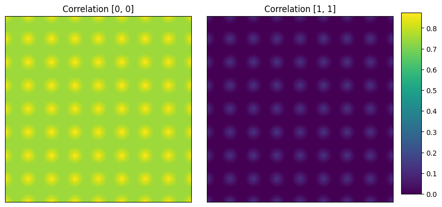
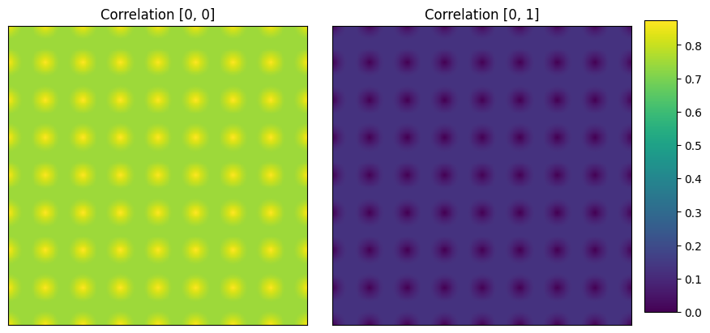
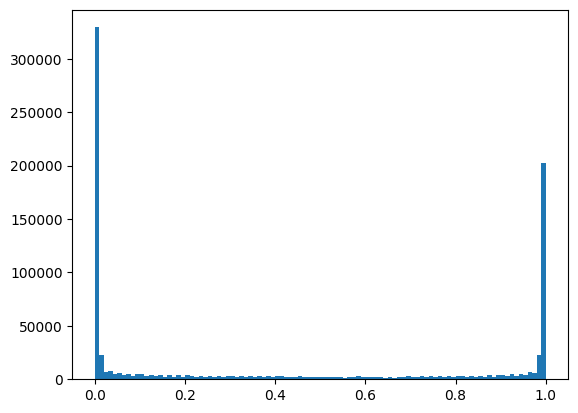
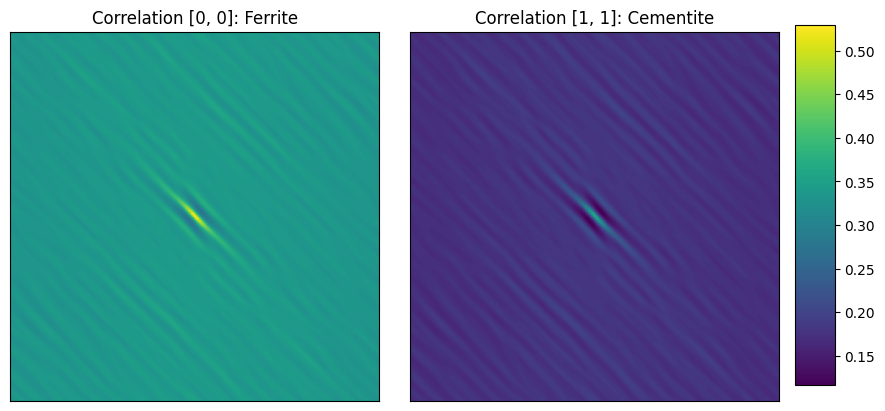

September 13, 2024
Observe in the above photo how different-sized Lego pieces are joined together to make the pyramid-like structure. Similarly, materials are also made up of micro and macro structures. Each of these features is interlinked to various properties of materials. I have discussed this structural hierarchy of materials in my blog post, 'Exploring Hierarchical Materials'. Materials hierarchy is not only limited to organising but also to correlating different length-scaled structures impacting the materials properties and subsequently the performance metrics. In other words, the structural properties govern the functional properties of materials. We can view the structural features of materials using different types of microscopes. Also, it is crucial to understand the spatial distributions of these features mathematically using correlation functions.
This tutorial provides a comprehensive coding guidance to compute 2-point correlation functions.
Before diving into the coding activity, it is important to get aquainted with a few terms associated with correlation functions.
Note that 2-point correlations also serve as the foundation for higher order N-point statistics, which can capture even more complex spatial relationships within a material.
pip install pymks
from pymks import (generate_multiphase, plot_microstructures,
PrimitiveTransformer, TwoPointCorrelation,FlattenTransformer )
import numpy as np
import matplotlib.pyplot as plt
from PIL import Image
from skimage import io, color
from skimage.color import rgb2gray
from sklearn.pipeline import Pipeline
Box = np.zeros((400,400))
# OPEN GRID
x, y = np.ogrid[:400, :400]
for i in range(0,420,50):
for j in range(0,420,50):
circles = (x-i)**2 + (y-j)**2 <= 10**2
Box[circles] = 1.0
plt.imshow(Box, cmap ='gray')
#Histogram generation
plt.hist(Box.ravel(), bins=100)
plt.show()PyMKS requires certain data shapes for 2-point spatial correlation calculations. To compute 2-point correlations for two-dimensional microstructure, PyMKS requires a 4-dimensional array.
In the phase axis, the specific phase is encoded as '1's and the rest of the image gets '0's-analogous to one-hot encoding in image analysis.
Adding sample axis
Box.shapeOutput:(400, 400)
Box_a=np.expand_dims(Box, axis=0)
Box_a.shapeOutput:(1, 400, 400)
Adding phase axis
d1 = PrimitiveTransformer(n_state=2, min_=0.0, max_=1.0).transform(Box_a)
d1.shapeOutput:(1, 400, 400, 2)
The PrimitiveTransformer of PyMKS generates the inverted version of the orginal image.
One-hot encoding of the phases
# first phase and second phase is considered 1
plot_microstructures(
d1[0, :, :, 0],
d1[0, :, :, 1],
titles=['First phase matrix', 'Second phase circles'],
cmap='gray',
colorbar=False
);#Auto correlations (matrix-matrix and circle-circle)
d1_corr = TwoPointCorrelation( periodic_boundary=True,cutoff=201,
correlations=[(0, 0), (1, 1)]).transform(d1)
plot_microstructures(
d1_corr[0,:, :, 0],
d1_corr[0,:, :, 1],
titles=['Correlation [0, 0]', 'Correlation [1, 1]']
);

First image (left): (0,0) vector corresponding to volume fraction of first phase, matrix is ~ 90%. Second image (right): (0,0) vector corresponding to volume fraction of second phase, circles is ~ 10%.
#Cross correlation
d1_corr_cr = TwoPointCorrelation(
periodic_boundary=True,
cutoff=201,
correlations=[(0,0), (0, 1)]
).transform(d1)
plot_microstructures(d1_corr_cr[0,:, :, 0],d1_corr_cr[0,:, :, 1],
titles=['Correlation [0, 0]', 'Correlation [0, 1]']
);

(Left image) Auto correlation of matrix phase, volume fraction taken at the centre is ~90%.
(Right image): Cross correlation between matrix and circular phase. The probability of finding matrix and circular phase together is 0% at (0,0).
# matrix is black (designated as 0.0)
#MATRIX PHASE
count_m = 0
xsize = Box.shape[0]
ysize = Box.shape[1]
print(xsize)
print(ysize)
for i in range(0,xsize):
for j in range(0,ysize):
if Box[i,j] == 0.0:
count_m += 1
print(count_m)
count_m/(xsize*ysize)
Output
400
400
139712
0.8732# circle phase is white (designated as 1.0)
count_c = 0
xsize = Box.shape[0]
ysize = Box.shape[1]
print(xsize)
print(ysize)
for i in range(0,xsize):
for j in range(0,ysize):
if Box[i,j] == 1.0:
count_c += 1
print(count_c)
count_c/(xsize*ysize)400
400
20288
0.1268✓ Load the image as shown in example 1
im_s=io.imread('test2pt.jpg')
plt.imshow(im_s)
The microstructure has lamellar morphology with alternating bands of cementite and ferrite. Cementite is Fe3C and has orthorhombic crystal structure. Ferrite is Fe2O3 with body centered cubic (BCC) crystal structure.
Unlike the first image, this is a RGB image as computed from shape function. An additional step is required in this case to convert the image to grayscale.
| Code | Output |
|---|---|
|
(875, 985, 3) | |
(875, 985) |
Hence, we convert this RGB image to grayscale image using rgb2gray function of skimage.color module (scikit-image package). The shape of the image changes from (875, 985, 3) to (875, 985).
✓As before, check the histogram of the image to get an overview of the distribution of pixel values and intensities.
| Code | Output |
|---|---|
|
 |
✓Repeat step 3 and 4 as demonstrated in example 1.
# Adding sample axis
im_s_g1=np.expand_dims(im_s_g, axis=0)
#Adding phase axis
d2=PrimitiveTransformer(n_state=2, min_=0.0, max_=1.0).transform(im_s_g1)
-------------------------------------------------------------------------
# ONE HOT ENCODING:
plot_microstructures(
d2[0,:, :, 0],
d2[0,:, :, 1],
titles=['1s for Ferrite phase ', '1s for Cementite phase'],cmap = 'gray')The encoded images are displayed below. Left image shows the ferrite phase encoded as '1's while the right image shows cemnetite phase as bright regions.
✓ Finding the auto correlations
d2_corr = TwoPointCorrelation(
periodic_boundary=True,
cutoff=500,
correlations=[(0, 0), (1, 1)]
).transform(d2)
# Auto Correlation Maps
plot_microstructures(
d2_corr[0,:, :, 0],
d2_corr[0,:, :, 1],
titles=['Correlation [0, 0]', 'Correlation [1, 1]']
);

Images show auto correlation maps of first (ferrite) and second (cementite) phases.
The center pixel (0,0) represents the volume fraction which can be read from the color code.
Ferrite volume fraction ~ 55%; Cementite volume fraction ~ 33%
✓ Cross checking the volume fractions as done in example 1
min=np.min(im_s_g)
max=np.max(im_s_g)
xsize = im_s_g.shape[0]
ysize = im_s_g.shape[1]
#Output: (875, 985)
# Voulme fraction of cementite (bright regions in original micrograph)
count_w_s = 0
for i in range(0,xsize):
for j in range(0,ysize):
if im_s_g[i,j] > 0.9:
count_w_s += 1
print(count_w_s)
count_w_s/(xsize*ysize)
#volume fraction calculated for cementite ~ 31%
#Volume fraction of ferrite (dark regions in the original micrrgraph)
count_b_s = 0
for i in range(0,xsize):
for j in range(0,ysize):
if im_s_g[i,j] < 0.1:
count_b_s += 1
print(count_b_s)
count_b_s/(xsize*ysize)
# volume fraction calculated for ferrite ~ 46%Note that in this example, the sum of two phases is not adding up to 100% as there are pixel values in between 0 and 1 as seen from the histogram.
✓ Plotting cross correlation map
d2_corr_cr = TwoPointCorrelation(
periodic_boundary=True,
cutoff=500,
correlations=[(0, 1)]
).transform(d2)
# Cross Correlation Map
plot_microstructures(
d2_corr_cr[0,:, :, 0],
titles=['Cross Correlation [0, 1]']
);

Here, the (0, 0) vector has an approximate value of less than 10% implying the probabilty of 2 phases co-existing is less than 10% in the same spatial voxel.
Please click here to access the entire code.
Privacy policy| Materials Data Explorer by Joyita Bhattacharya is licensed under CC BY-SA 4.0